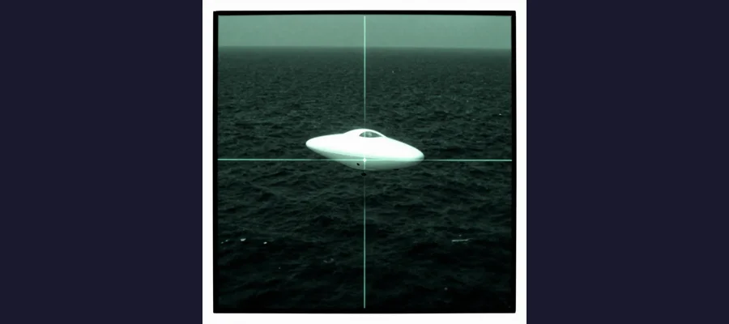
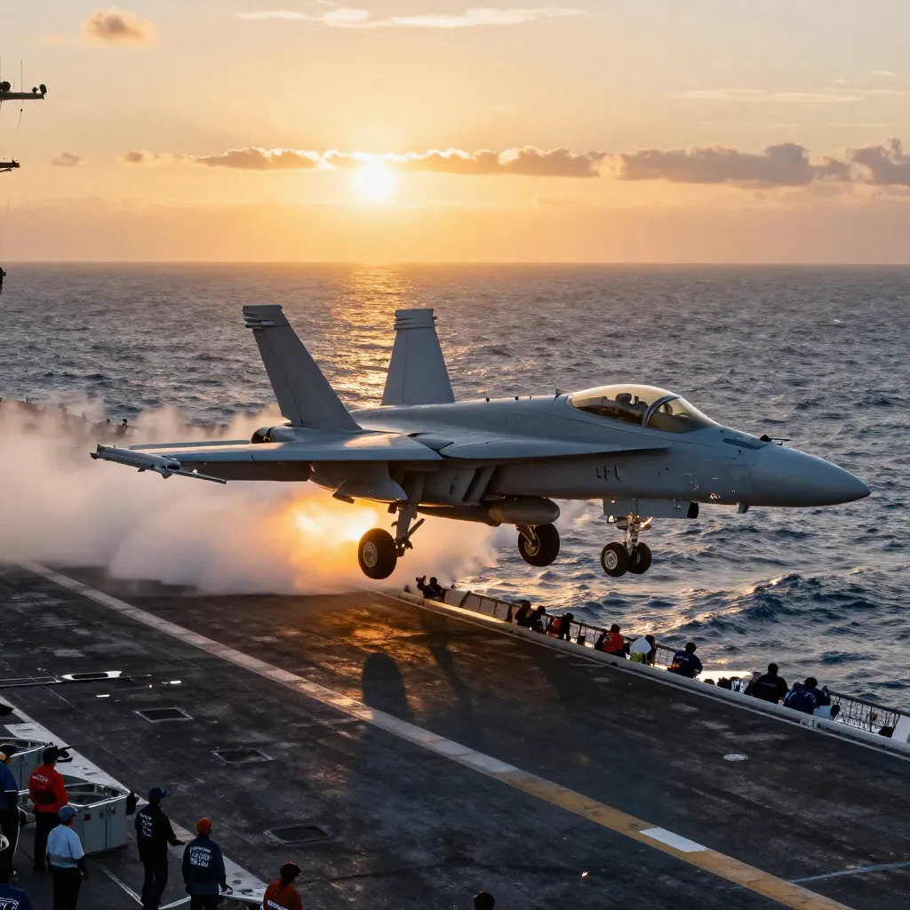

USS Nimitz Tic Tac Encounter: The Navy Pilot UFO Sighting That the Pentagon Couldn't Explain

The USS Nimitz Tic Tac encounter of November 14, 2004 — when Commander David Fravor and his wingman engaged a 40-foot wingless craft that outmaneuvered the most advanced fighter jets in the US Navy.
On November 14, 2004, approximately 100 miles southwest of San Diego, California, two United States Navy F/A-18F Super Hornet pilots from the elite Strike Fighter Squadron VFA-41 — the Black Aces — were redirected from a routine training exercise to investigate an object that the most advanced radar system in the Navy had been tracking for two weeks. What they encountered over the Pacific Ocean that day would become the most well-documented, most credibly witnessed, and most thoroughly authenticated UFO incident in American military history — an encounter so extraordinary that the United States Department of Defense would spend years investigating it in secret, and eventually release the evidence to the public with an official statement confirming its authenticity.
The lead pilot was Commander David Fravor, a graduate of the Navy's legendary TOPGUN fighter weapons school and the commanding officer of the Black Aces squadron aboard the aircraft carrier USS Nimitz (CVN-68). His wingman was Lieutenant Commander Jim Slaight. Both were combat-seasoned aviators with thousands of hours of flight time in the Navy's most sophisticated fighter jet. They had been launched from the Nimitz that morning for a standard air defense training exercise as part of a larger carrier strike group exercise involving the USS Princeton (CG-59), a guided-missile cruiser equipped with the most advanced air defense radar system in the world. They expected a routine mission. They got something else entirely.
The Radar That Saw Too Much: Two Weeks of Impossible Contacts
The story did not begin on November 14. It began approximately two weeks earlier, when Senior Chief Petty Officer Kevin Day, the radar operator aboard the USS Princeton, began noticing contacts on his AN/SPY-1 radar — the sophisticated phased-array system that forms the backbone of the Navy's Aegis Combat System — that did not correspond to any known aircraft. The objects were tracking at altitudes between 25,000 and 60,000 feet, moving at relatively slow speeds of around 120 knots, and operating in groups of five to ten. Their flight patterns were erratic — hovering, zigzagging, making rapid altitude changes. But the most extraordinary characteristic was their ability to drop from 80,000 feet to sea level in seconds, a maneuver that would subject any known aircraft to G-forces that would destroy both the vehicle and its occupants.
Day was not an excitable amateur. He was a seasoned radar operator with years of experience on the SPY-1 system. He ran calibrations. He checked for glitches. He consulted with other operators. The contacts persisted. Over the course of approximately two weeks, Day tracked the objects repeatedly, documenting their extraordinary flight characteristics and growing increasingly convinced that they were not weather anomalies, radar artifacts, or known aircraft. Finally, on November 14, after the objects were detected descending from high altitude to a position near the ocean surface, Day requested that the Princeton's combat information center communicate the contact to the Nimitz air wing. Commander Fravor and Lieutenant Commander Slaight were redirected from their training exercise to investigate. A second two-seat F/A-18F, piloted by Lieutenant Commander Alex Dietrich, was also dispatched to provide additional observation. They were told to expect something unusual. They were not told what.
📡 The FLIR Video: The Pentagon's Own UFO Footage
After Fravor's encounter, another pilot, Lieutenant Chad Underwood, was launched from the USS Nimitz with an F/A-18F equipped with a Forward-Looking Infrared (FLIR) targeting pod — a sophisticated infrared camera system used to detect and track heat signatures. Underwood succeeded where Fravor had not: he captured the Tic Tac-shaped object on video. The FLIR footage shows a white, wingless, capsule-shaped object hovering in the air, making abrupt lateral movements that appear to defy the laws of aerodynamics. The object has no visible control surfaces, no exhaust plume, no wings, and no tail. At one point, it accelerates off the edge of the screen at extraordinary speed. The video was recorded on November 14, 2004, leaked to the internet in 2007, and publicly circulated in 2017. In April 2020, the Department of Defense officially released the footage, along with two other Navy UAP videos ("Gimbal" and "Go Fast"), confirming in an official statement that the videos were authentic, had been taken by Navy personnel, and depicted phenomena that remained unidentified. The Pentagon's statement marked the first time the United States government had officially declassified and released UFO footage to the public.

The FLIR infrared targeting pod footage captured by Lt. Cmdr. Chad Underwood showing a white, wingless, 40-foot capsule-shaped object with no visible propulsion. The Pentagon confirmed this video is authentic and unaltered.
The Dogfight: When a Navy Commander Met Something That Should Not Exist
Fravor and Slaight descended toward the coordinates provided by the Princeton's radar. As they approached the area, Fravor looked down and saw something unexpected: a disturbed patch of ocean — a churning, foaming area of whitewater on an otherwise calm sea, approximately the size of a Boeing 737, with no visible cause. Hovering erratically about fifty feet above this churning water was an object that Fravor had never seen before — and as a TOPGUN graduate with thousands of hours of flight time, he had seen virtually every type of aircraft and missile in the U.S. arsenal and many foreign ones as well.
The object was wingless, tailless, and approximately 40 feet long, shaped like — as Fravor would later describe it — a Tic Tac mint. It was white, smooth, and featureless, with no visible engines, no flight control surfaces, no markings, no windows, and no exhaust. It hovered with an erratic, tumbling motion, oscillating across its long axis, as if it were bouncing on an invisible cushion of air. Fravor initiated a descent to get a closer look, descending in a circular pattern from about 20,000 feet. The Tic Tac began to rise, mirroring Fravor's descent across the circle — as if it were aware of his approach and responding to it.
What happened next has been described as a "dogfight" — though it was the most one-sided dogfight in aviation history. Fravor cut across the circle to close the distance. The Tic Tac accelerated instantaneously, crossing Fravor's flight path in a way that suggested it was not merely fast but capable of changing direction without decelerating — a violation of every principle of aerodynamics and physics that Fravor understood. It then departed at extraordinary speed. Fravor estimated that the object accelerated away at well beyond the speed of any aircraft he had ever encountered. The engagement lasted approximately five minutes.
But the strangest detail was still to come. After the Tic Tac departed, Fravor returned to the Nimitz. The Princeton's radar operators reported that the object had reappeared at the Combat Air Patrol (CAP) point — a predetermined holding position for Navy aircraft — approximately 60 miles away, and that it had arrived there in seconds. The object, it appeared, not only knew where the CAP point was, but had traveled to it at a speed that no known aircraft or missile could achieve.
🔥 The Physics Problem
The flight characteristics reported by Commander Fravor, observed on the USS Princeton's radar, and captured on Chad Underwood's FLIR video are not merely unusual — they are physically impossible according to current understanding of aerodynamics and materials science. The objects tracked by the Princeton's SPY-1 radar were descending from 80,000 feet to sea level in seconds, implying speeds and G-forces that would destroy any known material. The Tic Tac that Fravor encountered had no wings, no engines, and no visible means of generating lift or propulsion, yet it hovered, accelerated, and changed direction with apparent ease. The object that reappeared at the CAP point 60 miles away did so in seconds — implying speeds of several thousand miles per hour, performed without a sonic boom, without an exhaust plume, and without any visible means of propulsion. Aerospace engineers have noted that these characteristics — instantaneous acceleration, transmedium travel (air to water and back), lack of thermal signature, and the absence of any conventional flight control surfaces — are consistent across multiple UAP encounters and represent capabilities that are decades or centuries beyond current technology. The 2021 Office of the Director of National Intelligence report on UAP acknowledged that some objects demonstrated "technologies that appear to defy existing aerospace engineering principles."
The USS Roosevelt Encounters: Gimbal and Go Fast (2015)
The Nimitz encounter was not an isolated incident. In 2015, Navy pilots from the USS Theodore Roosevelt Carrier Strike Group operating off the East Coast of the United States reported a series of encounters with unidentified aerial phenomena that produced two additional videos later declassified by the Pentagon. The "Gimbal" video shows a rotating, saucer-shaped object moving against the wind with no visible means of propulsion. The "Go Fast" video shows a low-altitude, fast-moving object skimming above the ocean surface. In both cases, the pilots' audio recordings captured their astonishment: "There's a whole fleet of them, look on the AESA," one pilot exclaims in the Gimbal footage. "My gosh, they're all going against the wind. The wind's 120 knots to the west. Look at that thing, dude!" The Roosevelt encounters confirmed that the Nimitz incident was not a one-time event but part of a pattern of UAP activity near U.S. naval assets that had been occurring for years and continuing to the present day.

A US Navy F/A-18F Super Hornet launching from a Nimitz-class carrier — the same type of aircraft Commander David Fravor was flying when he encountered the Tic Tac object on November 14, 2004, in what became the most well-documented military UFO encounter in history.
From Secret Program to Public Disclosure: How the Pentagon's UFO Investigation Became Public Knowledge
For years after the Nimitz encounter, the incident remained largely unknown outside military circles. The FLIR video had been leaked to the internet in 2007 but attracted little mainstream attention. That changed in December 2017, when two reporters published an investigation revealing the existence of a classified Pentagon program called the Advanced Aerospace Threat Identification Program (AATIP), which had been investigating UAP encounters — including the Nimitz incident — since 2007. The program had been funded with $22 million in Department of Defense appropriations and was run by a former military intelligence officer named Luis Elizondo, who had resigned from the Pentagon in 2017 to join To The Stars Academy of Arts and Science (TTSA), an organization co-founded by former Blink-182 musician Tom DeLonge and former Deputy Assistant Secretary of Defense Christopher Mellon. The disclosure was coordinated with TTSA, which released the Nimitz, Gimbal, and Go Fast videos to the public.
The response was seismic. For the first time, the United States government had acknowledged — through official channels and confirmed documents — that it had been investigating UFO encounters reported by military personnel, and that some of those encounters involved objects with capabilities that defied explanation. The disclosure triggered a cascade of institutional responses. In April 2020, the Department of Defense officially declassified and released the three UAP videos, stating that the release was intended to "clear up any misconceptions by the public on whether or not the footage that has been circulating was real." In June 2021, the Office of the Director of National Intelligence (ODNI) released a Preliminary Assessment on Unidentified Aerial Phenomena to Congress, acknowledging that UAP represented a challenge to national security and that the government was unable to explain 143 of 144 incidents reviewed. In 2022, the Department of Defense established the All-domain Anomaly Resolution Office (AARO) to centralize UAP investigations across all military branches. In September 2023, NASA released its Independent Study Team report on UAP, concluding that there was no evidence that UAP were extraterrestrial but calling for a systematic, scientific approach to studying them.
🏛️ Under Oath: Congress Hears from the Nimitz Witnesses
In July 2023, Commander David Fravor and Lieutenant Commander Alex Dietrich testified under oath before a House Oversight Subcommittee on unidentified anomalous phenomena. Fravor described the Tic Tac encounter in detail, telling lawmakers that the object demonstrated capabilities "far beyond anything that we have." When asked by a congressman whether he believed the object posed a threat to national security, Fravor replied: "It has been 19 years and we haven't figured it out. That is a threat." Dietrich, who had been reluctant to speak publicly for years, confirmed her account of the encounter and described the professional and personal toll of being associated with the incident. The hearing also featured testimony from former intelligence officer David Grusch, who made sensational claims about a classified UAP crash retrieval program — claims that have not been independently verified. The hearing marked a watershed moment: for the first time in American history, military witnesses to a UFO encounter had testified about their experience under oath before Congress, on camera, for the world to see.
- November 14, 2004 — Commander David Fravor and Lieutenant Commander Jim Slaight encounter the Tic Tac object off the coast of Southern California during USS Nimitz training exercises
- November 14, 2004 — Lieutenant Chad Underwood captures the Tic Tac on FLIR infrared video from a second F/A-18F
- 2007 — FLIR video leaked to the internet; attracts little mainstream attention initially
- 2007–2012 — AATIP (Advanced Aerospace Threat Identification Program) operates within the Pentagon, investigating UAP encounters including Nimitz
- 2015 — USS Theodore Roosevelt pilots encounter UAPs off the U.S. East Coast; "Gimbal" and "Go Fast" videos recorded
- December 2017 — Public disclosure of AATIP and the Nimitz encounter; TTSA releases videos
- April 2020 — Department of Defense officially declassifies and releases three UAP videos (Nimitz, Gimbal, Go Fast)
- June 2021 — ODNI releases Preliminary Assessment on UAP to Congress; 143 of 144 incidents unexplained
- 2022 — Pentagon establishes AARO (All-domain Anomaly Resolution Office)
- September 2023 — NASA releases Independent Study Team report on UAP; calls for systematic scientific investigation
- July 2023 — David Fravor and Alex Dietrich testify under oath before House Oversight Subcommittee
- No visible means of propulsion — The Tic Tac had no engines, no exhaust, no propellers, no rotors, and no flight control surfaces, yet it hovered, accelerated, and changed direction with apparent ease.
- Instantaneous acceleration — The object transitioned from hover to extraordinary speed without any visible acceleration period, defying Newton's laws of motion as applied to known aerospace vehicles.
- Transmedium capability — The churning water below the Tic Tac suggested that an object had entered or was preparing to enter the ocean, implying the ability to operate in both air and water.
- No sonic boom — Despite traveling at speeds that appeared to exceed the sound barrier, the object produced no sonic boom, which is physically impossible for conventional aircraft at those speeds.
- Awareness of CAP point — The Tic Tac reappeared at the Navy's predetermined Combat Air Patrol point 60 miles away in seconds, suggesting it had knowledge of classified military procedures.
- No thermal signature — The FLIR infrared camera, designed to detect heat from aircraft engines, captured the object as a cold or low-signature target — inconsistent with any known jet, rocket, or combustion-based propulsion system.
🛫 The Encounter That Changed Everything
The USS Nimitz Tic Tac encounter is not like the Loch Ness Monster — a distant, blurry shape in a dark lake, glimpsed for seconds by untrained observers in poor conditions. It is not like the Roswell UFO incident — a story filtered through decades of retelling, conspiracy theories, and contradictory accounts. And it is not like the Mandela Effect — a psychological phenomenon that can be explained by the well-documented fallibility of human memory. The Nimitz encounter was witnessed by multiple highly trained military officers, detected on the most advanced radar system in the Navy, captured on infrared video by a military targeting pod, investigated by the Pentagon in a classified program, and eventually confirmed as authentic by the Department of Defense. It is, by any reasonable standard, the most credible UFO encounter in history. And it remains completely unexplained. The object Fravor encountered demonstrated capabilities that no known nation possesses — not the United States, not China, not Russia, not any country or corporation on Earth. The Skinwalker Ranch investigation explores the possibility that certain locations may be portals to other dimensions. The faith placed in the Shroud of Turin persists despite carbon dating to the contrary. The Nimitz encounter is different from both — it is a case where the evidence is not in dispute. What is in dispute is what it means. Are we being visited by technology from another civilization? Have we discovered a natural phenomenon that we do not yet understand? Or is there a third explanation — one that we have not yet imagined? The Pentagon has confirmed the encounter happened. The video is real. The radar data is real. The witnesses are real. The question of what was in the sky over the Pacific Ocean on November 14, 2004, remains open — and it is one of the most important open questions in the history of science and national security.
Frequently Asked Questions
What exactly did Commander Fravor see during the USS Nimitz encounter?
Commander David Fravor, a TOPGUN-trained Navy pilot, encountered a 40-foot, wingless, tailless, white, capsule-shaped object hovering erratically above a churning patch of ocean approximately 100 miles southwest of San Diego. The object, which Fravor described as resembling a Tic Tac mint, had no visible engines, exhaust, flight control surfaces, or markings. When Fravor attempted to close the distance, the object mirrored his movements, then accelerated away at extraordinary speed. It subsequently reappeared on radar at a position 60 miles away in seconds. The encounter lasted approximately five minutes and was witnessed by Fravor's wingman, Lieutenant Commander Jim Slaight.
Has the Pentagon confirmed the USS Nimitz UFO videos are real?
Yes. In April 2020, the United States Department of Defense officially declassified and released three UAP videos — the Nimitz "FLIR1" video from 2004, and the "Gimbal" and "Go Fast" videos from 2015. The Pentagon's official statement confirmed that the videos were taken by Navy personnel, were authentic, and depicted phenomena that remained unidentified. This was the first time the U.S. government officially released UFO footage to the public.
What was the Pentagon's AATIP program?
The Advanced Aerospace Threat Identification Program (AATIP) was a classified program within the U.S. Department of Defense that investigated unidentified aerial phenomena from 2007 to 2012. Funded with $22 million, the program was run by former military intelligence officer Luis Elizondo and investigated numerous UAP encounters reported by military personnel, including the USS Nimitz Tic Tac incident. The program's existence was publicly disclosed in December 2017. AATIP was preceded by AAWSAP (Advanced Aerospace Weapon System Applications Program), which had an even broader mandate to investigate anomalous phenomena including ground and underwater events.
Are there other military UFO encounters besides the Nimitz incident?
Yes. The Nimitz encounter is one of many reported UAP incidents involving the U.S. military. The USS Theodore Roosevelt carrier strike group reported numerous encounters with UAPs off the East Coast in 2014-2015, producing the "Gimbal" and "Go Fast" videos. The 2021 ODNI report on UAP documented 144 incidents, of which only one could be explained. Military pilots from multiple branches have reported encounters with objects demonstrating extraordinary flight characteristics, and the Pentagon's AARO office continues to investigate new reports. The Nimitz encounter remains the most thoroughly documented and publicly confirmed case.
Sources & References
- Wikipedia: 2004 USS Nimitz UFO Incident — Comprehensive account of the encounter, radar data, FLIR video, and subsequent investigations
- Britannica: UFO/Unidentified Flying Object — Overview of UFO history, government investigations, and the modern UAP disclosure era
- Wikipedia: AATIP — The Pentagon's classified UAP investigation program (2007-2012)
- CNBC: Pentagon Declassifies UFO Videos — Official DOD release of the Nimitz, Gimbal, and Go Fast footage
- CBS News: The Story Behind the Tic Tac UFO Sighting — Interviews with Fravor and Dietrich, Congressional testimony
- USA Today: Pentagon Declassifies Three Leaked Navy UFO Videos — DOD statement and video details
- NASA: Independent Study Team on Unidentified Aerial Phenomena — 2023 report calling for systematic scientific UAP investigation
📖 Recommended Reading
Want to learn more? Check out Amazon.com: UFO Sky Pilots: Pilots of Peace and Oneness eBook : Cameron, Grant , Barnabe, Desta: Kindle Store on Amazon for a deeper dive into this fascinating topic. (As an Amazon Associate, we earn from qualifying purchases.)